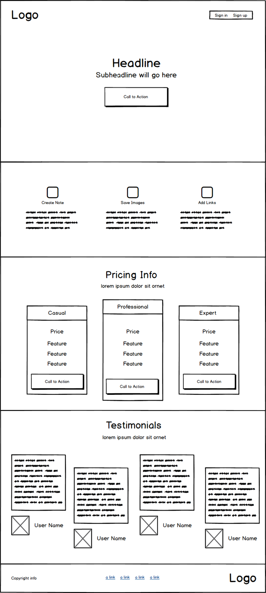

My role: Visual Design, UX/UI, Branding, Prototyping
Inspiration is everywhere but being able to capture and share your ideas with a team is cumbersome with
existing software. All the note taking web apps I have used in the past were either too basic
(which didn't allow me to collaborate effectively) or too complicated (which made them frustrating to use).
Unity Notes is a prototype web application I developed which gives teams an easy and intuitive way to collaborate online -
ensuring great ideas never get lost.
The challenge of this project was to follow a User-Centered Design Process and develop a SaaS Web Application from the ground up.
I decided to channel the frustrations I had with existing note taking apps (like Evernote and Google Keep) to develop my own app that
addresses the issues I experience when sharing content online.

Research
"UX design is about creating solutions that respond to the needs and desires of your target consumers, in a way that is usable, pleasing, and memorable." ~ Harish Venkatesan
Online Survey Google Forms, Facebook, Slack
User-Centered Design doesn’t happen alone. Since this project was born of my own frustration (looking at you Google Keep) I had to make sure the problem wasn't just in my head. Were others experiencing the same dissatisfaction I was?
Creating an Online Survey was a simple way to find out. Facebook and Slack (Bloc Hacker Club, FreeCodeCamp) turned out to be great resources to target users within my desired demographic for free.
I asked questions to understand how users interacted with their devices. Qualified them by finding out whether or not they worked in a collaborative environment. And learned who my primary competitors were.
Most importantly it gave respondents an opportunity to describe what they liked and disliked about the current tool(s) they use. An interesting correlation emerged- When their tool made it simple to save content they almost always mentioned it being difficult to sort and find the content they saved.
This insight would prove to be a strong competitive advantage and a main focal point during the development of Unity Notes.
Survey Highlights
-
92 % Preferred using their Smartphone to browse online. Laptops came in second. Desktops third. (69.2% and 53.8% respectively).
-
69 % Often times saved the content they found online. "ability to organize" was the most liked feature of the software they used.
-
84 % Worked in a collaborative setting. The majority of respondents (66%) were designers in the tech industry.
-
67 % experienced difficulty sorting and finding what they had saved with the software they were currently using.
- The options the respondents had to choose from on one question was: "never" "occasionally" or "often". Looking back I realized those answers are highly subjective. Adding context e.g. "Occasionally (1-5 times a week)" would have removed the subjectivity and given me more accurate information to work with.
- I didn't ask what features they wish their current product had. This would have been a great opportunity to discover important features that may have been overlooked. It could also be very valuable in determing what to prioritize for a Minimum Viable Product.
- I also realized afterwards that I had no way of contacting the respondents to clarify their responses or ask follow-up questions. Adding: "Please enter your email if it is ok to contact you with any further questions" would have allowed me to stay in touch with those willing to offer their opinion.
User Personas Skype, Illustrator
Most of my survey respondents were anonymous but thankfully a few were colleagues which allowed me to follow up and conduct in-person interviews. Surveys are great way to validate a hypothesis but interviews offer a depth of understanding and empathy that proved invaluable-
I was actually surprised by how much I was able to learn just by getting in front of my potential users and having a conversation. The interviews were also useful to inform the creation of User Personas. By understand each unique workflow I was able to create three personas
to guide my development process and ensure the end user was always central throughout the decision-making process.
Example User Persona
- My interview style was mostly organic. Because I knew them personally I didn’t have to consider establishing rapport- I was able to ask any question that came to mind. As a result, the interviews went smoothly but the downside was that each interview varied significantly and I wasn’t able to develop a baseline between them for comparison.
- I don’t feel my User Personas were entirely fleshed out. I included insignificant information (e.g. their location) and didn’t spend enough time on developing personas that garnered empathy past the pain points I mentioned. When designing future Personas I will put more emphasis on developing character.
Throughout the development process you should be able to quickly determine how your persona would react to the overall experience.
Competitive Analysis Whiteboard, Sketch App
My Competitive Analysis was completed in two phases: The first phase was done prior to sending out the survey. I brainstormed all of the key terms which Unity Notes would appear under Google, Bing, and Yahoo search engines. (e.g. “note taking apps”, “best tools for team collaboration”). Reviewing and paring down those results gave me a list of options
to include in my questionnaire (making sure to include an option for respondents to include anything I may have missed). The results of the Survey helped me focus my research on Unity Notes three strongest competitors:
Once I identified the three strongest competitors the second phase began. I conducted a SWOT Analysis to determine Unity Notes' competitive edge. I considered Evernote to be the strongest of the three reviewed because they most closely resemble what Unity Notes will be offering (and they are already an Established Brand with over 100+ Million users). Fortunately they suffer from poor UI problems. Respondents stated Evernote was "overwhelming and difficult to use". OneNote, although not as popular as Evernote (at least among my respondents) is still a strong competitor created by the powerhouse Microsoft. Since Unity Notes is being developed as a web app it would have seen a competitive edge over Microsoft years ago when Office was offered as download-only and exclusive to Windows- But since Microsoft has transitioned the Office Suite into a Web Service with Office 365, Unity Notes must now rely on carving a niche and being more responsive to users demands to compete. Google Keep is free but lacks true collaborative features. Unity notes will utilize the same Masonry Layout As Google Keep but places more emphasis on co-authoring content vs simply collecting content.
- This competitive Analysis focused more on Surface Level details about each company, rather than focusing on Unity Notes’ competitive advantage (user experience). If I had spent more time reviewing the features of each product along with their limitations (Which were expressed in the Surveys and Interviews) I could have provided clear and actionable goals for the development of Unity Notes.
Structure
"If a picture is worth 1000 words, a prototype is worth 1000 meetings". ~ Tom & David Kelley
User Stories Index Cards, Google Sheets
Writing good User Stories can be deceptively challenging, especially in an agile environment. If you don’t correctly evaluate your user’s needs you can end up wasting valuable time and resources developing features that simply won’t get used (while delaying other features that would). For me, user involvement was the most critical factor for determining which features should take priority. After writing down every User Story I could think of onto index cards (for both new and returning users) I sat down with 2 potential users and had them sort the cards in order from ‘Develop First’ to ‘Develop Last’. I encouraged them to discuss and decide the order of cards together which helped me get a better sense of their Thought Process.
After they were done sorting I pointed to one card toward the end of the list and asked them “If you signed up and realized it didn’t have this feature yet.. would you still use Unity Notes?” I continued toward each card moving towards the beginning of the list until they could agree “NO”. Prioritizing features would come in handy developing a Minimum Viable Product.
- Having the Users work collaboratively may not have been the right choice. Each had a different threshold for what they would be willing to do without, in the end they compromised well but it did cause some tension between them and if I had needed them to cooperate on anything further it may have been met with resistance. Instead I would want to conduct that test individually and with a larger sample size.
- For the sake of time I didn’t include the benefit of my User Stories. “As a [Persona] I want to [do something] so that I can [realize a reward]”. I think it is important to always remember WHY we’re developing a feature (and have a clear test to prove it’s complete). Doing this again I would ensure to include them.
User Flows Draw.io, Google Sheets
My favorite activity in the Structure phase of my design process is hands-down creating User Flows. Maybe that’s just because I discovered Draw.io? (Probably helped that I was designing for a brand new SaaS Application as opposed to an establish one with 100+ Million Users and 3x the features too.. but still). Creating User Flows after I prioritized the User Stories was a great way to start invisioning how users would navigate the site. The User Flows also turned out to be an easy reference when designing the Low-Fidelity Wireframes.
'New Signup' User Flow
'Manage Collaborators' User Flow
Low-Fidelity Wireframes Sneakpeekit, Balsamiq, inVision
With both the User Stories and User Flows established (and our MVP priorities identified) it was time to build and test our first Low-Fidelity Prototype. The first step was referencing the User Flows to construct a Sitemap. Thanks to Balsamiq creating it only took a few minutes. Next came the Homepage. I created a few variations and returned to the same Facebook groups I used to conduct my initial survey to get more feedback.
Winningest Homepage Variation

With the homepage layout determined I turned my attention to usability. I wireframed the accounts page and turned it into a clickable prototype with inVision. The goal of this step is to make sure it was intuitive and easy to navigate before investing resources on a High Fidelity Mockup. I brought my laptop with me to Ziggi’s coffee shop in Longmont and enticed a few guinea pigs volunteers to complete click-thru tests with the promise of blueberry scones afterwards.
- Posting four variations of the homepage online for feedback was more effort than it was worth. It may have been fine had I put all four together in the same (numbered) image and asked respondents which they preferred.. But I didn’t. Instead I put them into a single elimination bracket. So it went ‘1 vs 2’ and ‘3 vs 4’ then the winners (versions 1 and 3) went head-to-head in a final showdown. By the time it got to that point everyone was over it and I got far fewer responses.
- If I’m going to be paying for scones I really need to have more tests prepared. It literally took less than 3 minutes for everyone to complete the click-thru tests and if they hadn't politely declined the Scones I offered to buy them I would have been out $12. It was a fun experience but I can’t say it would have been worth the money for what little I had prepared.
“You don’t think your way to creative work. You work your way to creative thinking.” ~ George Nelson
Branding Sketch App, Illustrator, Styletil.es
Logo
Color Scheme
Typography
High Fidelity Wireframes Sketch App, inVision
Development
"Get in over your head and often and joyfully as possible." ~ Alexander Isley
"The future belongs to a different kind of person with a different kind of mind: artists, inventors, storytellers-creative and holistic ‘right-brain’ thinkers whose abilities mark the fault line between who gets ahead and who doesn’t." ~ Daniel Pink
Aside from relying on my Mentor's feedback Unity Notes was a solo project so my biggest asset was time. If this had been a
collaborative effort (or had the project been requested by a client) I would have needed
to adjust my design process to account for potential budget constraints and stakeholder demands.
Nam elementum nisl et mi a commodo porttitor. Morbi sit amet nisl eu arcu faucibus hendrerit vel a risus. Nam a orci mi, elementum ac arcu sit amet, fermentum pellentesque et purus. Integer maximus varius lorem, sed convallis diam accumsan sed. Etiam porttitor placerat sapien, sed eleifend a enim pulvinar faucibus semper quis ut arcu. Ut non nisl a mollis est efficitur vestibulum. Integer eget purus nec nulla mattis et accumsan ut magna libero. Morbi auctor iaculis porttitor. Sed ut magna ac risus et hendrerit scelerisque. Praesent eleifend lacus in lectus aliquam porta. Cras eu ornare dui curabitur lacinia.
33 year old Colorado transplant of 4 years (Born and raised in Iowa). I’m the youngest of five children and definitely a momma’s boy. My interest in design began in 8th grade when I discovered MS Paint could pass as a makeshift CAD program to make cleaner woodworking plans. Throughout my 20's I worked as an independent contractor for a small design company in Iowa. Providing customer service to existing clients and eventually transitioning those sweet MS Paint skills into Photoshop to create wireframes and High-fidelity site mockups for new clients.
I enrolled in Bloc's Full-Time Designer Track program in March of 2017, quitting my job of four years to focus all of my attention on becoming a User Experience Designer. It has been five months since I've started the program and I've learned enough to be dangerous. I have a greater appreciation of the design process and the benefits of conducting thorough research. What I need now is real-world experience. My goal is to find a local design firm who sees my potential and who's willing to help me become the best UX Designer this world has ever seen.
In the meantime I will continue to learn all that I can through books, webinars, and meetups. Becoming a skilled UX Designer is definitely an arduous process at times but I truly enjoy learning all that I can about human behavior and how that translates into designing functional and memorable experiences for users.